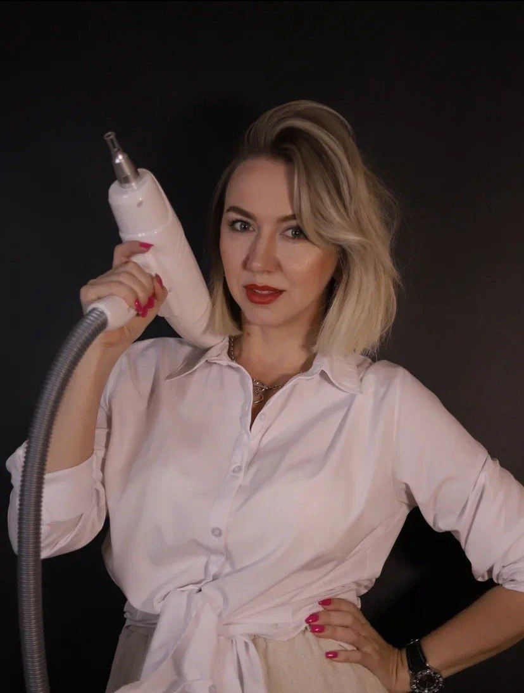
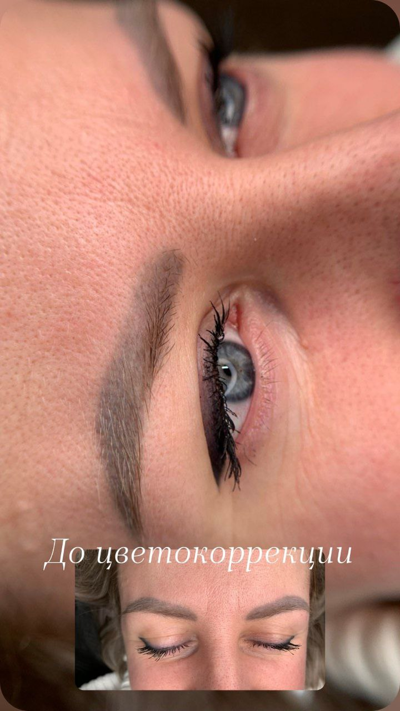
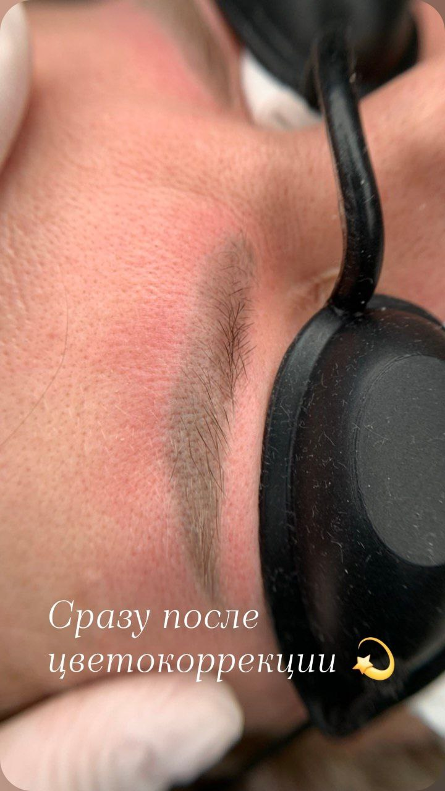
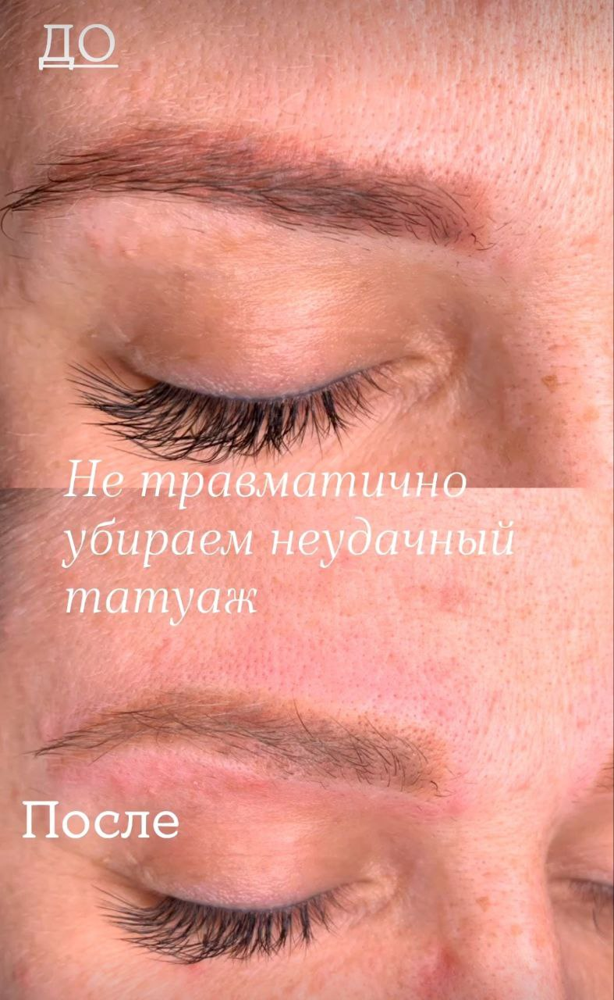

Удаление татуажа аппаратом и ремувером в Ростове-на-Дону
Осветляю старый татуаж бровей, губ и век и делаю цветокоррекцию. Пришлите фото, и я скажу, какой способ подойдёт и сколько примерно сеансов нужно

Осветление и цветокоррекция перманентного макияжа
Помогу исправить неудачный перманентный макияж и вернуть оттенку естественность и гармоничность.
Я работаю со старым или некачественным перманентным макияжем: бережно осветляю нежелательный пигмент с помощью лазера, корректирую оттенок и при необходимости подготавливаю кожу к обновлению.
Если остаточного пигмента немного и он достаточно светлый, в некоторых случаях я могу выполнить цветокоррекцию и обновить перманентный макияж за одно посещение.
Важно: моя задача - не полное удаление перманентного макияжа, а осветление и коррекция пигмента для достижения красивого, гармоничного результата. Подход и количество процедур я подбираю индивидуально после оценки состояния кожи и остаточного пигмента.
Мои работы



Аппарат или ремувер
Аппарат
Разбивает пигмент, а дальше организм выводит его сам. Следующий сеанс не раньше чем через месяц
Ремувер
Специальный состав, который вытягивает пигмент из кожи. Перерыв между сеансами 2 месяца
Я работаю обоими способами. Какой подойдёт вам, скажу по фото старого татуажа
Сколько нужно сеансов
Честно: шаблона нет. Число сеансов зависит от того, насколько плотный пигмент, сколько раз делали татуаж раньше и как кожа и иммунитет отвечают на процедуру. Скажу точнее, когда увижу фото
После осветления можно сделать новый перманент: брови, губы или стрелку, уже в натуральной технике
Противопоказания: кому нельзя
- беременность
- воспалительные заболевания в острой форме
- герпес в зоне перманента
- псориаз в зоне перманента
- конъюнктивит (для век)
- склонность к келоидным рубцам
- сахарный диабет, инсулинозависимая форма
- низкая свёртываемость крови (гемофилия)
- приём препаратов, разжижающих кровь
- приём ретиноидов
- нарушения иммунной системы, ВИЧ, СПИД
- гепатит B
- онкология
- склеродермия
- эпилепсия
- психические расстройства
- алкогольная или наркотическая интоксикация
Сомневаетесь - напишите мне, разберёмся до записи
Напишите мне, можно сразу с фото. Подскажу технику и цвет, подберём удобный день. Приём по записи, 30-40 минут от центра Ростова
Записаться